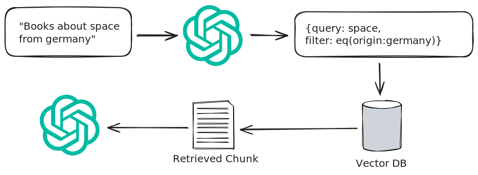
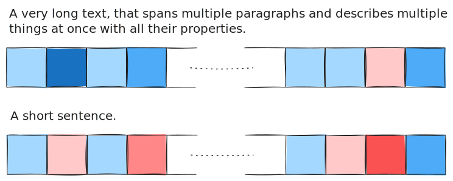
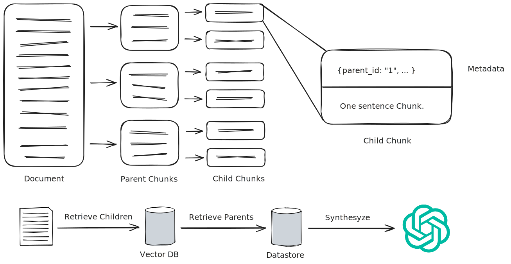
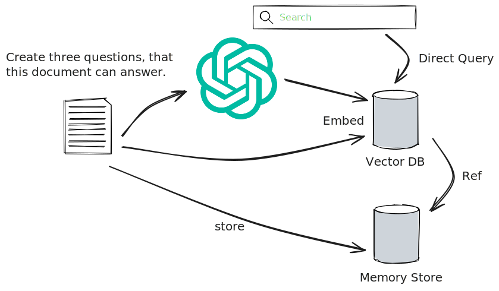

<!DOCTYPE html>
<html lang="en">
  <head>
    <meta charset="utf-8" />
    <meta name="viewport" content="width=device-width, initial-scale=1.0, maximum-scale=1.0, user-scalable=no" />

    <title></title>
    <link rel="stylesheet" href="dist/reveal.css" />
    <link rel="stylesheet" href="dist/theme/sky.css" id="theme" />
    <link rel="stylesheet" href="css/vs2015.css" />
	<link rel="stylesheet" href="css/layout.css" />
	<link rel="stylesheet" href="plugin/customcontrols/style.css">
	<link rel="stylesheet" href="plugin/chalkboard/style.css">


    <script defer src="dist/fontawesome/all.min.js"></script>

	<script type="text/javascript">
		var forgetPop = true;
		function onPopState(event) {
			if(forgetPop){
				forgetPop = false;
			} else {
				parent.postMessage(event.target.location.href, "app://obsidian.md");
			}
        }
		window.onpopstate = onPopState;
		window.onmessage = event => {
			if(event.data == "reload"){
				window.document.location.reload();
			}
			forgetPop = true;
		}

		function fitElements(){
			const itemsToFit = document.getElementsByClassName('fitText');
			for (const item in itemsToFit) {
				if (Object.hasOwnProperty.call(itemsToFit, item)) {
					var element = itemsToFit[item];
					fitElement(element,1, 1000);
					element.classList.remove('fitText');
				}
			}
		}

		function fitElement(element, start, end){

			let size = (end + start) / 2;
			element.style.fontSize = `${size}px`;

			if(Math.abs(start - end) < 1){
				while(element.scrollHeight > element.offsetHeight){
					size--;
					element.style.fontSize = `${size}px`;
				}
				return;
			}

			if(element.scrollHeight > element.offsetHeight){
				fitElement(element, start, size);
			} else {
				fitElement(element, size, end);
			}		
		}


		document.onreadystatechange = () => {
			fitElements();
			if (document.readyState === 'complete') {
				if (window.location.href.indexOf("?export") != -1){
					parent.postMessage(event.target.location.href, "app://obsidian.md");
				}
				if (window.location.href.indexOf("print-pdf") != -1){
					let stateCheck = setInterval(() => {
						clearInterval(stateCheck);
						window.print();
					}, 250);
				}
			}
	};


        </script>
  </head>
  <body>
    <div class="reveal">
      <div class="slides"><section  data-markdown><script type="text/template"><!-- .slide: class="has-dark-background drop" data-background-color="#001834" -->
<div class="" style="position: absolute; left: 0px; top: 0px; height: 720px; width: 1280px; min-height: 720px; display: flex; flex-direction: column; align-items: start; justify-content: center" absolute="true">

### Praktische Verbesserungsstrategien für deine RAG-Pipelines
<div class="stretch-column" style="font-size: 22px; position: absolute; left: 0%; top: 60%; height: 10%; width: 100%; display: flex; flex-direction: column; align-items: start; justify-content: space-evenly" align="stretch">

Emil Bohleber, Software Developer bei BRICKMAKERS 
</div>

 

<div class="" style="position: absolute; left: 0%; top: 90%; height: 10%; width: 20%; display: flex; flex-direction: column; align-items: start; justify-content: center" >


</div>
</div></script></section><section ><section data-markdown><script type="text/template"><!-- .slide: style="font-size: 30px" class="has-dark-background drop" data-background-color="#001834" -->
<div class="" style="position: absolute; left: 0px; top: 0px; height: 720px; width: 1280px; min-height: 720px; display: flex; flex-direction: column; align-items: start; justify-content: center" absolute="true">

### Warum Retrieval Augmented Generation?
Wie bekommen wir unsere Daten ins LLM?
- "Wir können doch einfach alles in Prompts schreiben."
	- Relativ günstig, aber
	- Große Tokenmenge und kleine Contextfenster
	- "Lost in the middle"-Probleme

- "Was ist mit Fine-Tuning."
	- Hohe Kosten
	- Großes vorab Investment, geringer Qualitätsgewinn
	- "drop in the ocean"-Problem


<div class="" style="position: absolute; left: 0%; top: 90%; height: 10%; width: 20%; display: flex; flex-direction: column; align-items: start; justify-content: center" >


</div>
</div></script></section><section data-markdown><script type="text/template"><!-- .slide: style="font-size: 30px" class="has-dark-background drop" data-background-color="#001834" -->
<div class="" style="position: absolute; left: 0px; top: 0px; height: 720px; width: 1280px; min-height: 720px; display: flex; flex-direction: column; align-items: start; justify-content: center" absolute="true">

### What is RAG? (baby, don't hurt me)

Friere LLM ein und beschränke den Prompt auf das nötigste.

- Tokenanzahl bleibt relativ klein
- Kostengünstig
- Embedding Modelle sind sehr klein (lokal)
- Grundimplementierung einfach (mit geeigneten Mitteln)


<div class="" style="position: absolute; left: 0%; top: 90%; height: 10%; width: 20%; display: flex; flex-direction: column; align-items: start; justify-content: center" >


</div>
</div></script></section><section data-markdown><script type="text/template"><!-- .slide: style="font-size: 30px" class="has-dark-background drop" data-background-color="#001834" -->
<div class="" style="position: absolute; left: 0px; top: 0px; height: 720px; width: 1280px; min-height: 720px; display: flex; flex-direction: column; align-items: start; justify-content: center" absolute="true">

### Was ist ein Embedding?

Repräsentation der Bedeutung eines Texts als Multidimensionaler Vektor.
- Rudimentärer Bestandteil von LLMs
- Ermöglicht Vergleich (Berechnung) von Semantik von Texten
	- z.B: `king − man + woman ≈ queen`
- Vergleich durch z.B. Euklidische Distanz: `$\sqrt{\sum_{i=1}^{n}{(q_i-p_i)^2}}$`
	- Auch möglich durch Kosinus-, Manhattan- oder Chebyshev-Ähnlichkeit


<div class="" style="position: absolute; left: 0%; top: 90%; height: 10%; width: 20%; display: flex; flex-direction: column; align-items: start; justify-content: center" >


</div>
</div></script></section><section data-markdown><script type="text/template"><!-- .slide: style="font-size: 30px" class="has-dark-background drop" data-background-color="#001834" -->
<div class="" style="position: absolute; left: 0px; top: 0px; height: 720px; width: 1280px; min-height: 720px; display: flex; flex-direction: column; align-items: start; justify-content: center" absolute="true">

### Beispiele von Embeddings

| Text | Embedding |
|---|---|
| cat | [1.5, -0.4, 7.2, 19.6, 20.2] |
| dog | [1.7, -0.3, 6.9, 19.1, 21.1] |
| apple | [-5.2, 3.1, 0.2, 8.1, 3.5] |
| strawberry | [-4.9, 3.6, 0.9, 7.8, 3.6] |
| building | [60.1, -60.3, 10, -12.3, 9.2] |
| car | [81.6, -72.1, 16, -20.2, 102] |
| **Query: fruit** | [-5.1, 2.9, 0.8, 7.9, 3.1] |


<div class="" style="position: absolute; left: 0%; top: 90%; height: 10%; width: 20%; display: flex; flex-direction: column; align-items: start; justify-content: center" >


</div>
</div></script></section><section data-markdown><script type="text/template"><!-- .slide: class="has-dark-background drop" data-background-color="#001834" -->
<div class="" style="position: absolute; left: 0px; top: 0px; height: 720px; width: 1280px; min-height: 720px; display: flex; flex-direction: column; align-items: start; justify-content: center" absolute="true">

## Implementation
<small>Simple setup for RAG-Pipeline.</small>


<div class="" style="position: absolute; left: 0%; top: 90%; height: 10%; width: 20%; display: flex; flex-direction: column; align-items: start; justify-content: center" >


</div>
</div></script></section><section data-markdown><script type="text/template"><!-- .slide: style="font-size: 30px" class="has-dark-background drop" data-background-color="#001834" -->
<div class="" style="position: absolute; left: 0px; top: 0px; height: 720px; width: 1280px; min-height: 720px; display: flex; flex-direction: column; align-items: start; justify-content: center" absolute="true">

### Probleme beim naiven RAG

- **Low Precision**: Nicht alle Chunks sind relevant
	- Halluzinationen, "lost in the middle"-Problems, Zu viel "Rauschen"
- **Low Recall**: Keine Chunks sind relevant
	- LLM hat nicht genügent Context, irrelevante Antwort
- **Low Speed**: Keine Indexierung
	- Retrieval dauert lange bei vielen Daten


<div class="" style="position: absolute; left: 0%; top: 90%; height: 10%; width: 20%; display: flex; flex-direction: column; align-items: start; justify-content: center" >


</div>
</div></script></section><section data-markdown><script type="text/template"><!-- .slide: style="font-size: 30px" class="has-dark-background drop" data-background-color="#001834" -->
<div class="" style="position: absolute; left: 0px; top: 0px; height: 720px; width: 1280px; min-height: 720px; display: flex; flex-direction: column; align-items: start; justify-content: center" absolute="true">

### Komplexität der Lösungen

Wir dürfen aber nicht das Verhältnis zwischen Komplexität und Wert aus den Augen verlieren


<div class="" style="position: absolute; left: 0%; top: 90%; height: 10%; width: 20%; display: flex; flex-direction: column; align-items: start; justify-content: center" >


</div>
</div></script></section></section><section ><section data-markdown><script type="text/template"><!-- .slide: style="font-size: 30px" class="has-dark-background drop" data-background-color="#001834" -->
<div class="" style="position: absolute; left: 0px; top: 0px; height: 720px; width: 1280px; min-height: 720px; display: flex; flex-direction: column; align-items: start; justify-content: center" absolute="true">

### Self Querying Retrieval

- Embeddings eingnen sich für Bedeutung
- ...jedoch nicht für harte Daten z.B. { jahr: 1985, ... }

**Idee**: Füge Metadaten zu Dokumenten hinzu.


<div class="" style="position: absolute; left: 0%; top: 50%; height: 40%; width: 60%; display: flex; flex-direction: column; align-items: start; justify-content: flex-start" align="left">

**Vorteile**:
- Indexierte Suche
- Metadaten verbessern synthese
- Unterstützt von vielen Vector DBs
</div>


<div class="" style="position: absolute; left: 0%; top: 90%; height: 10%; width: 20%; display: flex; flex-direction: column; align-items: start; justify-content: center" >


</div>
</div></script></section><section data-markdown><script type="text/template"><!-- .slide: style="font-size: 30px" class="has-dark-background drop" data-background-color="#001834" -->
<div class="" style="position: absolute; left: 0px; top: 0px; height: 720px; width: 1280px; min-height: 720px; display: flex; flex-direction: column; align-items: start; justify-content: center" absolute="true">

### Self Querying Retrieval

Verwende LLM um Metadatenfilter und Bedeutung zu extrahieren.




<div class="" style="position: absolute; left: 0%; top: 90%; height: 10%; width: 20%; display: flex; flex-direction: column; align-items: start; justify-content: center" >


</div>
</div></script></section><section data-markdown><script type="text/template"><!-- .slide: class="has-dark-background drop" data-background-color="#001834" -->
<div class="" style="position: absolute; left: 0px; top: 0px; height: 720px; width: 1280px; min-height: 720px; display: flex; flex-direction: column; align-items: start; justify-content: center" absolute="true">

### Self Querying Retrieval


```text 
Your goal is to structure the user's query to match the request schema provided 
below.  

...
{  
"query": string \ text string to compare to document contents  
"filter": string \ logical condition statement for filtering documents  
}
...
A comparison statement takes the form: `comp(attr, val)`:

- `comp` (eq | ne | gt | gte | lt | lte | contain | like | in | nin): comparator
- `attr` (string): name of attribute to apply the comparison to
- `val` (string): is the comparison value
```


<div class="" style="position: absolute; left: 0%; top: 90%; height: 10%; width: 20%; display: flex; flex-direction: column; align-items: start; justify-content: center" >


</div>
</div></script></section><section data-markdown><script type="text/template"><!-- .slide: class="has-dark-background drop" data-background-color="#001834" -->
<div class="" style="position: absolute; left: 0px; top: 0px; height: 720px; width: 1280px; min-height: 720px; display: flex; flex-direction: column; align-items: start; justify-content: center" absolute="true">

## Implementation
<small>Classic book search</small>


<div class="" style="position: absolute; left: 0%; top: 90%; height: 10%; width: 20%; display: flex; flex-direction: column; align-items: start; justify-content: center" >


</div>
</div></script></section></section><section ><section data-markdown><script type="text/template"><!-- .slide: style="font-size: 30px" class="has-dark-background drop" data-background-color="#001834" -->
<div class="" style="position: absolute; left: 0px; top: 0px; height: 720px; width: 1280px; min-height: 720px; display: flex; flex-direction: column; align-items: start; justify-content: center" absolute="true">

### Small to big retrieval

- Embeddings verlieren "Auflösung" mit Chunk Größe
- Große Chunks <i class="fas fa-arrow-right"></i> Breiter Kontext und lose Ideen
- Kleine Chunks <i class="fas fa-arrow-right"></i> Details, aber kein Kontext
 



<div class="" style="position: absolute; left: 0%; top: 90%; height: 10%; width: 20%; display: flex; flex-direction: column; align-items: start; justify-content: center" >


</div>
</div></script></section><section data-markdown><script type="text/template"><!-- .slide: style="font-size: 30px" class="has-dark-background drop" data-background-color="#001834" -->
<div class="" style="position: absolute; left: 0px; top: 0px; height: 720px; width: 1280px; min-height: 720px; display: flex; flex-direction: column; align-items: start; justify-content: center" absolute="true">

### Small to big retrieval

**Idee**: Kleine Chunks für Retrieval, große Chunks für Synthese




<div class="" style="position: absolute; left: 0%; top: 90%; height: 10%; width: 20%; display: flex; flex-direction: column; align-items: start; justify-content: center" >


</div>
</div></script></section><section data-markdown><script type="text/template"><!-- .slide: class="has-dark-background drop" data-background-color="#001834" -->
<div class="" style="position: absolute; left: 0px; top: 0px; height: 720px; width: 1280px; min-height: 720px; display: flex; flex-direction: column; align-items: start; justify-content: center" absolute="true">

## Implementation
<small>Query a knowledge base</small>


<div class="" style="position: absolute; left: 0%; top: 90%; height: 10%; width: 20%; display: flex; flex-direction: column; align-items: start; justify-content: center" >


</div>
</div></script></section></section><section ><section data-markdown><script type="text/template"><!-- .slide: style="font-size: 30px" class="has-dark-background drop" data-background-color="#001834" -->
<div class="" style="position: absolute; left: 0px; top: 0px; height: 720px; width: 1280px; min-height: 720px; display: flex; flex-direction: column; align-items: start; justify-content: center" absolute="true">

### Hypothetical Document Embedding

Gespeichertes Embedding vs. Frage-Embedding
- Unterschied zwischen Frage und gespeicherten Date ist zu groß
- Fragen sind nicht genau genug


<div class="" style="position: absolute; left: 0%; top: 90%; height: 10%; width: 20%; display: flex; flex-direction: column; align-items: start; justify-content: center" >


</div>
</div></script></section><section data-markdown><script type="text/template"><!-- .slide: style="font-size: 30px" class="has-dark-background drop" data-background-color="#001834" -->
<div class="" style="position: absolute; left: 0px; top: 0px; height: 720px; width: 1280px; min-height: 720px; display: flex; flex-direction: column; align-items: start; justify-content: center" absolute="true">

### Also kann man HyDE überall verwenden?

<div class="" style="position: absolute; left: 0%; top: 20%; height: 40%; width: 60%; display: flex; flex-direction: column; align-items: start; justify-content: flex-start" align="left">

Nicht ganz:
- LLM muss schon etwas von der Thematik wissen
- Teuer/Langsam, da jede Frage die LLM aufruft
- ...sogar wenn es nicht nötig gewesen wäre
</div>


**Alternative**: Inverses HyDE (Fragen-Pre-Embedding?)


<div class="" style="position: absolute; left: 0%; top: 90%; height: 10%; width: 20%; display: flex; flex-direction: column; align-items: start; justify-content: center" >


</div>
</div></script></section><section data-markdown><script type="text/template"><!-- .slide: style="font-size: 30px" class="has-dark-background drop" data-background-color="#001834" -->
<div class="" style="position: absolute; left: 0px; top: 0px; height: 720px; width: 1280px; min-height: 720px; display: flex; flex-direction: column; align-items: start; justify-content: center" absolute="true">

### Inverses HyDE

- Anstatt bei jeder Query eine hythetische Antwort zu generieren, Generiere hypothetische Fragen bei Ingestion




<div class="" style="position: absolute; left: 0%; top: 90%; height: 10%; width: 20%; display: flex; flex-direction: column; align-items: start; justify-content: center" >


</div>
</div></script></section><section data-markdown><script type="text/template"><!-- .slide: style="font-size: 30px" class="has-dark-background drop" data-background-color="#001834" -->
<div class="" style="position: absolute; left: 0px; top: 0px; height: 720px; width: 1280px; min-height: 720px; display: flex; flex-direction: column; align-items: start; justify-content: center" absolute="true">

### Bonus: Kombination bei Multi Vector Retrieval

<div class="" style="position: absolute; left: 0%; top: 20%; height: 40%; width: 60%; display: flex; flex-direction: column; align-items: start; justify-content: flex-start" align="left">

**Idee**: Sortiere deine Ergebnismenge nochmals nach dem Retrieval

- Retrieval aus unterschiedlichen Quellen
- Sogar Multi-Modale Ergebnisse möglich
- Mehrere Embeddings für das selbe Dokument
</div>


<div class="" style="position: absolute; left: 0%; top: 90%; height: 10%; width: 20%; display: flex; flex-direction: column; align-items: start; justify-content: center" >


</div>
</div></script></section><section data-markdown><script type="text/template"><!-- .slide: class="has-dark-background drop" data-background-color="#001834" -->
<div class="" style="position: absolute; left: 0px; top: 0px; height: 720px; width: 1280px; min-height: 720px; display: flex; flex-direction: column; align-items: start; justify-content: center" absolute="true">

## Implementation
<small>Emotional support taylor swift</small>


<div class="" style="position: absolute; left: 0%; top: 90%; height: 10%; width: 20%; display: flex; flex-direction: column; align-items: start; justify-content: center" >


</div>
</div></script></section></section><section ><section data-markdown><script type="text/template"><!-- .slide: style="font-size: 30px" class="has-dark-background drop" data-background-color="#001834" -->
<div class="" style="position: absolute; left: 0px; top: 0px; height: 720px; width: 1280px; min-height: 720px; display: flex; flex-direction: column; align-items: start; justify-content: center" absolute="true">

## Zusammenfassung 

- Wir haben einige "low effort" Lösungen für ein paar Probleme von RAG gesehen
- Wähle das richtige Werkzeug für den richtigen Job
	- z.B. self querying retrieval für shops
- Wichtiger Punkt, der eine eigenen Talk verdient: **Evaluation**
	- z.B. mit [PromptFoo](https://www.promptfoo.dev)
	- Erkenne erst deine Probleme, finde dann eine Lösung
- Start small


<div class="" style="position: absolute; left: 0%; top: 90%; height: 10%; width: 20%; display: flex; flex-direction: column; align-items: start; justify-content: center" >


</div>
</div></script></section><section data-markdown><script type="text/template"><!-- .slide: style="font-size: 30px" class="has-dark-background drop" data-background-color="#001834" -->
<div class="" style="position: absolute; left: 0px; top: 0px; height: 720px; width: 1280px; min-height: 720px; display: flex; flex-direction: column; align-items: start; justify-content: center" absolute="true">

### Welche Techniken, wofür?

<div class="" style="font-size: 30px" >

| Name| Nutzt LLM | Beschreibung | Wofür? |
|---|---|---|---|
| Self Query | Ja | Filter Embeddings anhand Metadaten | Antworten können besser durch klassischen Index abgebildet werden |
| Parent Document | Nein | Indexiere Teile, Retrieve Ganzes | Viele unterschiedliche Informationen, Kontext wichtig |
| Multi Vector (IHyDE) | Bei Indexierung | Mehrere Embeddings für das selbe Doc | Wenn Fragen besser auf andere Repräsentation von Daten passen |
</div>

Mehr bei [langchain](https://python.langchain.com/v0.1/docs/modules/data_connection/retrievers/)


<div class="" style="position: absolute; left: 0%; top: 90%; height: 10%; width: 20%; display: flex; flex-direction: column; align-items: start; justify-content: center" >


</div>
</div></script></section></section><section  data-markdown><script type="text/template"><!-- .slide: class="has-dark-background drop" data-background-color="#001834" -->
<div class="" style="position: absolute; left: 0px; top: 0px; height: 720px; width: 1280px; min-height: 720px; display: flex; flex-direction: column; align-items: start; justify-content: center" absolute="true">

### Vielen Dank

Code und Slides auf https://github.com/brickmakersgmbh/DNUG_RAG `$^*$`
<div class="stretch-column" style="font-size: 18px; position: absolute; left: 0%; top: 80%; height: 10%; width: 100%; display: flex; flex-direction: column; align-items: start; justify-content: space-evenly" align="stretch">

*ab morgen, oder so
</div>


<div class="" style="position: absolute; left: 0%; top: 90%; height: 10%; width: 20%; display: flex; flex-direction: column; align-items: start; justify-content: center" >


</div>
</div></script></section></div>
    </div>

    <script src="dist/reveal.js"></script>

    <script src="plugin/markdown/markdown.js"></script>
    <script src="plugin/highlight/highlight.js"></script>
    <script src="plugin/zoom/zoom.js"></script>
    <script src="plugin/notes/notes.js"></script>
    <script src="plugin/math/math.js"></script>
	<script src="plugin/mermaid/mermaid.js"></script>
	<script src="plugin/chart/chart.min.js"></script>
	<script src="plugin/chart/plugin.js"></script>
	<script src="plugin/customcontrols/plugin.js"></script>
	<script src="plugin/chalkboard/plugin.js"></script>

    <script>
      function extend() {
        var target = {};
        for (var i = 0; i < arguments.length; i++) {
          var source = arguments[i];
          for (var key in source) {
            if (source.hasOwnProperty(key)) {
              target[key] = source[key];
            }
          }
        }
        return target;
      }

	  function isLight(color) {
		let hex = color.replace('#', '');

		// convert #fff => #ffffff
		if(hex.length == 3){
			hex = `${hex[0]}${hex[0]}${hex[1]}${hex[1]}${hex[2]}${hex[2]}`;
		}

		const c_r = parseInt(hex.substr(0, 2), 16);
		const c_g = parseInt(hex.substr(2, 2), 16);
		const c_b = parseInt(hex.substr(4, 2), 16);
		const brightness = ((c_r * 299) + (c_g * 587) + (c_b * 114)) / 1000;
		return brightness > 155;
	}

	var bgColor = getComputedStyle(document.documentElement).getPropertyValue('--r-background-color').trim();
	var isLight = isLight(bgColor);

	if(isLight){
		document.body.classList.add('has-light-background');
	} else {
		document.body.classList.add('has-dark-background');
	}

      // default options to init reveal.js
      var defaultOptions = {
        controls: true,
        progress: true,
        history: true,
        center: true,
        transition: 'default', // none/fade/slide/convex/concave/zoom
        plugins: [
          RevealMarkdown,
          RevealHighlight,
          RevealZoom,
          RevealNotes,
          RevealMath.MathJax3,
		  RevealMermaid,
		  RevealChart,
		  RevealCustomControls,
		  RevealChalkboard, 
        ],


    	allottedTime: 120 * 1000,

		mathjax3: {
			mathjax: 'plugin/math/mathjax/tex-mml-chtml.js',
		},
		markdown: {
		  gfm: true,
		  mangle: true,
		  pedantic: false,
		  smartLists: false,
		  smartypants: false,
		},

		mermaid: {
			theme: isLight ? 'default' : 'dark',
		},

		customcontrols: {
			controls: [
				{ icon: '<i class="fa fa-pen-square"></i>',
				title: 'Toggle chalkboard (B)',
				action: 'RevealChalkboard.toggleChalkboard();'
				},
				{ icon: '<i class="fa fa-pen"></i>',
				title: 'Toggle notes canvas (C)',
				action: 'RevealChalkboard.toggleNotesCanvas();'
				},
			]
		},
      };

      // options from URL query string
      var queryOptions = Reveal().getQueryHash() || {};

      var options = extend(defaultOptions, {"width":1280,"height":720,"margin":0.04,"controls":true,"progress":true,"slideNumber":true,"center":false,"transition":"slide","transitionSpeed":"slow"}, queryOptions);
    </script>

    <script>
      Reveal.initialize(options);
    </script>
  </body>

  <!-- created with Advanced Slides -->
</html>
